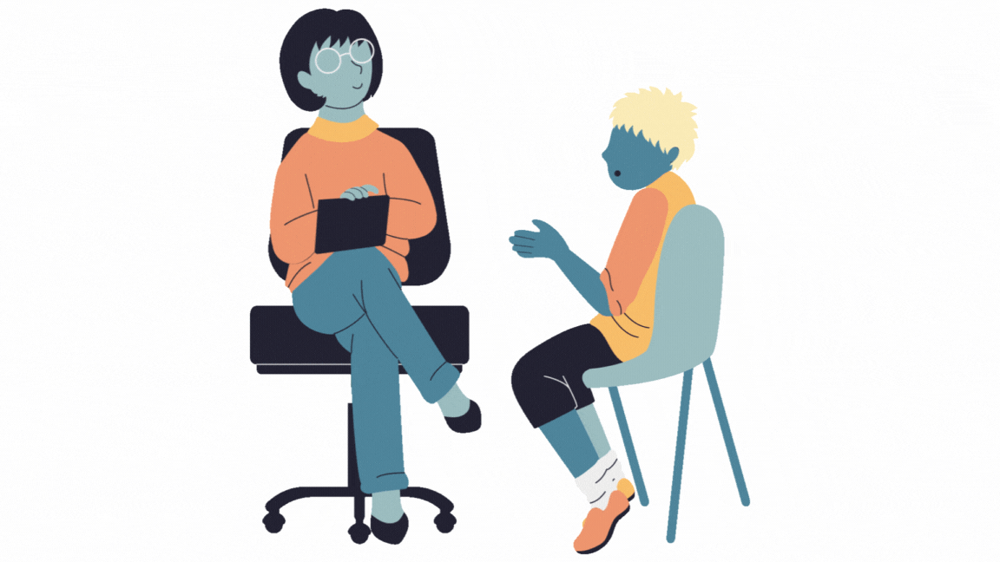

¡Prepárate para desatar todo tu poder emocional! 💪🌟
¡Bienvenido a un espacio dedicado exclusivamente a desbloquear tu potencial emocional y llevarte a nuevas
alturas de autenticidad y éxito! 🚀 En esta sección, te ofrecemos una orientación práctica y recomendaciones
fundamentales para el desarrollo de la inteligencia emocional. Explora a fondo todo este contenido 🕵️♂️,
para descubrir recursos enriquecedores que te acompañarán en este proceso de autodescubrimiento y
crecimiento emocional 🌱.
Nota:▼
El contenido y material presentado en esta sección ha sido recopilado de fuentes especializadas que se
centran en el tema que hemos discutido anteriormente en el apartado de "INICIO".
Para obtener más detalles y acceder directamente a las fuentes originales, hemos proporcionado enlaces a
los sitios web o recursos específicos de cada autor. Creemos en dar crédito donde crédito es
debido y animamos a nuestros visitantes a explorar más a fondo los trabajos de estos profesionales. 📚💡
¡Desarrolla tu inteligencia emocional con estos consejos! 🚀
Autoevaluación▼
¡Comenzamos subrayando la importancia de una autoevaluación, la cual puedes llevar a cabo mediante un
test específico disponible en la sección de "TEST" 📊. Dependiendo de los
resultados obtenidos. Sigue explorando el contenido para cultivar y fortalecer tu inteligencia
emocional 🌱💪.
Hábitos▼
Consultando el sitio de "MetLife",
cultivar hábitos tiene beneficios significativos para el bienestar emocional y la calidad de vida.
Algunas de las prácticas recomendadas por el sitio son:
Conócete a ti mismo: Observa la manera en la que tus emociones afectan tus acciones, evalúa
cómo de imparciales y justos eres. Si eres coherente con lo que piensas y haces, podrás moldear tus
acciones sin ser completamente controlado por tus emociones. También tienes que estar abierto a
críticas constructivas de amigos y colegas de trabajo; esto te ayudará a ver aquellos defectos que
no eres capaz de identificar en ti mismo. 🤔👥
Sé optimista: Afronta los problemas con la certeza de que serás capaz de superarlos.
Aprovecha los momentos difíciles para aprender y crecer personalmente, presta atención a las buenas
cualidades de las personas en lugar de concentrarte únicamente en los defectos y juzgar de forma
preconcebida. 😊🌈
Empatiza con las personas: Escuchar y considerar las emociones del otro y la situación en la
que se encuentra, entender lo que está pensando y respetarlo sin cerrarse a una única posición,
puede ayudarte en la resolución de problemas y búsqueda de soluciones. 🤝💖
El Instituto Europeo de Inteligencias Eficientes (IEIE) destaca la
importancia de mantener un diario emocional para mejorar la inteligencia emocional. Escribir se
considera una terapia gratuita y liberadora que brinda la oportunidad de expresarse sinceramente. Se
recomienda dedicar una libreta exclusivamente al drenaje emocional, ya sea antes de dormir o cuando se
sienta necesario. 📓💬
Según el Instituto Europeo de
Psicología
Positiva (IEPP), realizar un ejercicio práctico puede ayudarte a trabajar la inteligencia
emocional, centrándose en las fases de identificación, comprensión y manejo de las emociones, claves
para su desarrollo.
Fase de Identificación: En esta etapa es esencial reconocer y nombrar nuestras emociones. A
menudo, estamos tan inmersos en nuestras tareas diarias que pasamos por alto lo que sentimos. Este
paso inicial requiere una atención consciente para conectarnos con nuestras emociones, evitando que
el estrés y las tensiones pasen desapercibidos. Prestar atención a las señales emocionales es
crucial para gestionar eficazmente nuestras reacciones. 🧐📝
Fase de Comprensión: La comprensión implica analizar el propósito y la función de cada
emoción experimentada. A veces, evitamos enfrentar emociones desagradables, pero comprender su
origen y función es fundamental para utilizarlas de manera constructiva. Por ejemplo, al reconocer
que el miedo a la opinión de los superiores indica una conexión emocional con el trabajo, podemos
transformar esa emoción en motivación para mejorar nuestro desempeño. 🤔🤯
Fase de Manejo: Por último, la fase de manejo es cuando utilizamos toda la información
anterior en forma de conductas. Por ejemplo, cuando:
He identificado que siento miedo a la opinión de mis jefes por si me quedo sin trabajo.
Que ese miedo me indica que este trabajo me gusta y que lo quiero mantener.
Que el efecto del miedo sostenido es que me desconcentro, tengo peores resultados y el miedo
se incrementa mucho más.
Entonces decido cambiar el foco de mi pensamiento y de mis conductas, ponerlo en hacer mi
trabajo bien, porque he analizado que cuando hago esto las cosas me salen mejor, mi mente se
concentra y al final los resultados llegan.
A modo práctico, puedes desarrollar tu Inteligencia Emocional llevando a cabo lo siguiente:
Ejercicios de respiración consciente: La respiración consciente, como en la meditación, puede
ayudar a calmar la mente y aumentar la conciencia emocional. La conexión entre la respiración y las
emociones es fundamental para gestionarlas de manera efectiva. 🌬️🧘♂️
Actividades relacionadas con el arte escénico: teatro, danza, música: Participar en
actividades artísticas fomenta la expresión emocional y la empatía al explorar diversos personajes y
situaciones. Esto ayuda a entender y comunicar mejor las emociones tanto propias como ajenas. 🎭🕺🎶
Juegos en los que sea importante manejar e interpretar emociones de los demás: Juegos que
involucren la interpretación de emociones, como juegos de roles o juegos de mesa estratégicos,
pueden mejorar la inteligencia emocional al practicar la lectura de expresiones faciales y
comportamientos. 🎲😃
Deportes como el Aikido, Judo, Karate, Kung Fu y Capoeira: Estos deportes no solo desarrollan
habilidades físicas, sino que también enfatizan la autodisciplina, el respeto y el control
emocional. La práctica constante puede contribuir a una mayor autoconciencia emocional. 🥋🤸♂️
Tomar terapia o consulta psicológica para expresar tus emociones y pensamientos en un entorno
seguro: La terapia proporciona un espacio seguro para explorar y comprender emociones, así
como aprender estrategias para manejarlas. El apoyo profesional puede ser fundamental para el
crecimiento emocional. 🛋️🗣️

Descubre más sobre el poder de tus emociones siguiendo en las redes sociales a compañeros inspiradores en el
pie de página. Encuentra apoyo, motivación y consejos valiosos para conquistar tus desafíos académicos.
¡Conéctate con comunidades que entienden y apoyan tu viaje! 🌐🤝